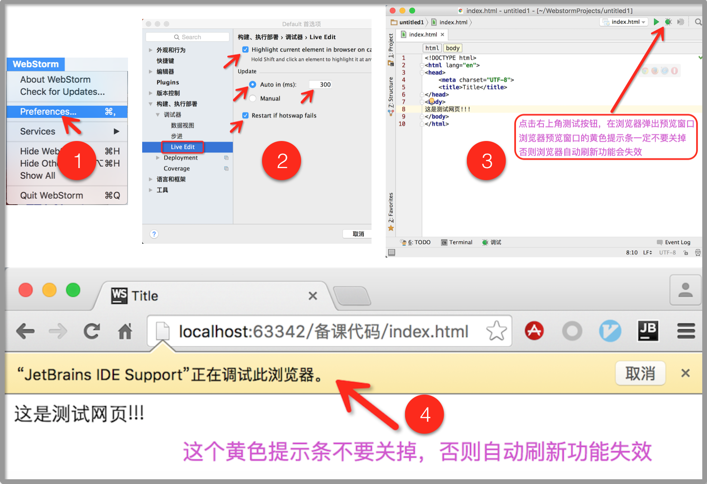

在做前端开发时，我们经常会碰到这样的情况，每次写完html代码，总是需要打开浏览器刷新页面查看预览效果，这样重复的操作无疑是非常费时费力的，因此实现一个写完代码就可以自动刷新浏览器查看预览效果的功能是非常有必要的，下面就介绍两种方法，来实现我们需要的这个功能。
方法一
WebStorm+谷歌浏览器+JetBrains IDE Support
JetBrains IDE Support 是一个谷歌浏览器插件.
优点：操作简单
缺点：只能实现在谷歌浏览器中实时预览
软件环境：
- 安装WebStorm
- 安装谷歌浏览器
- 安装谷歌浏览器JetBrains插件
JetBrains插件下载 (附插件安装方法)
设置步骤：
- 打开 WebStorm => 打开 Preferences => 搜索框输入 Live Edit 搜索找到 Live Edit 选项
- 勾选 Highlight current…
- 勾选 Auto in (ms) 设置 300
- 勾选 Restart if…
- 重启 WebStorm
- 点击 WebStorm 右上角的测试按钮，在浏览器中弹出预览窗口
- 提示：浏览器预览窗口的黄色提示条一定不能关掉，如果关掉浏览器预览功能会失效。
- 在WebStorm中编辑html文件后，谷歌浏览器就可以自动刷新看到预览效果了。

方法二
使用Browsersync插件
优点：功能强大，全平台支持
缺点：安装稍复杂，每预览一个工程都需要执行一遍命令
Browsersync简介
Browsersync能让浏览器实时、快速响应您的文件更改（html、js、css、sass、less等）并自动刷新页面。更重要的是 Browsersync可以同时在PC、平板、手机等设备下进行调试。您可以想象一下：“假设您的桌子上有pc、ipad、iphone、android等设备，同时打开了您需要调试的页面，当您使用browsersync后，您的任何一次代码保存，以上的设备都会同时显示您的改动”。无论您是前端还是后端工程师，使用它将提高您30%的工作效率。
Browsersync安装
- 安装Homebrew
终端执行以下命令安装Homebrew1
$ /usr/bin/ruby -e "$(curl -fsSL https://raw.githubusercontent.com/Homebrew/install/master/install)"
- 安装 node.js
终端执行以下命令安装npm或者到官网下载安装包安装1
$ brew install node
- 安装 Browsersync
终端执行以下命令安装 Browsersync安装时如果出现 EACCES error 问题，请参考此处解决.1
$ npm install -g browser-sync
- 启动 Browsersync
切换到项目根目录，在终端中执行以下命令，监听所有文件的变化1
$ browser-sync start --server --files "**/*.*"
- 当被监听的文件被修改时，浏览器中即可自动刷新实现预览。